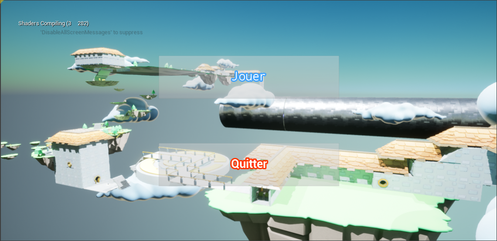

- Kaboom Platformer -

Context du projet
Le projet consiste à créer un Platformer FPS sur Unreal Engine. Le temps imparti est de 3 semaines. Le langage utilisé est le Blueprint.
Notre jeu
Notre jeu comporte trois armes différentes qui ont chacunes leur fonction et utilités :
- Le BasicWeapon : arme basique, tire un projectile blessant les ennemis.
- Le ShockWave : emet une onde de choc permettant de propulser : les ennemis, les objets, et le joueur lui-même.
- Le ShieldMaker : tire un bouclier lent permettant de pousser les ennemis et de se proteger des projectiles.
- Le Grappling : permet de s'accrocher sur une surface et de se diriger vers celle-ci.
On ne peut porter qu'une seul arme à la fois en plus de l'arme de base.
Il y a trois niveau imbriqués dans le jeu permettant de mettre en lumière chacunes des armes développées.
Date de création du projet
Second projet fait lors de la troisième année au sein du Gaming Campus, bachelor informatique option jeux vidéo.
Equipe
L'equipe est composé de 3 développeurs en troisième année au Gaming Campus.
Liens vers le Code et la Build du jeu
Code
Cliquez ici pour acceder au GitHub
Build
Cliquez ici pour télécharger le jeu